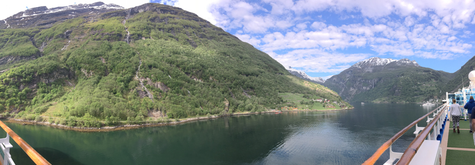
Geirangerfjord is Norway's most spectacular and perhaps best-known fjord. With its high waterfalls and mountain farms, the landcape was included on UNESCO's list of world heritage sites in 2005 as one of the "most scenically outstanding fjord areas on the planet".
Queen Sonja of Norway has contributed to Geiranger's popularity with annual trips, staying at abandoned farms such as Skageflå, and publishing a book with photos of her trips.
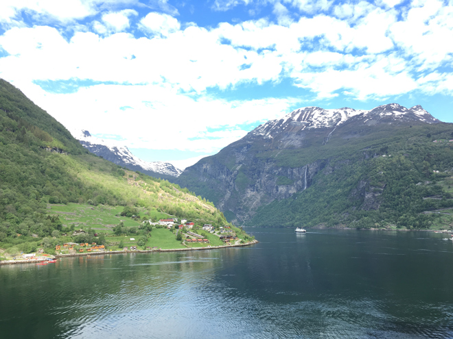
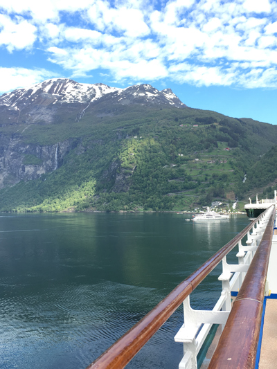
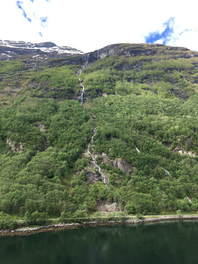
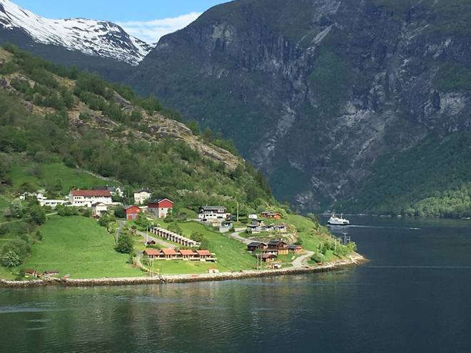
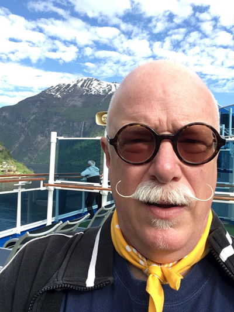
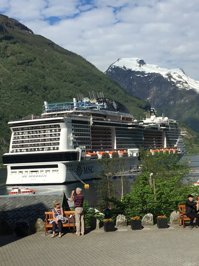
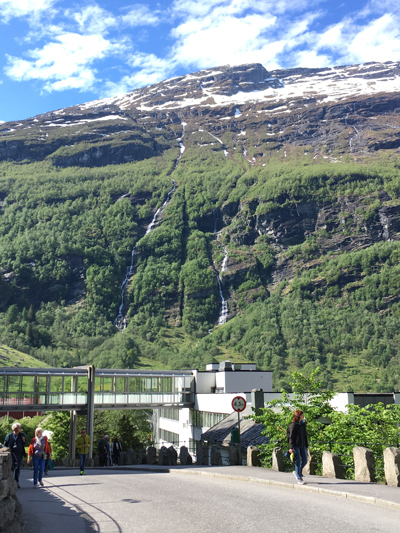
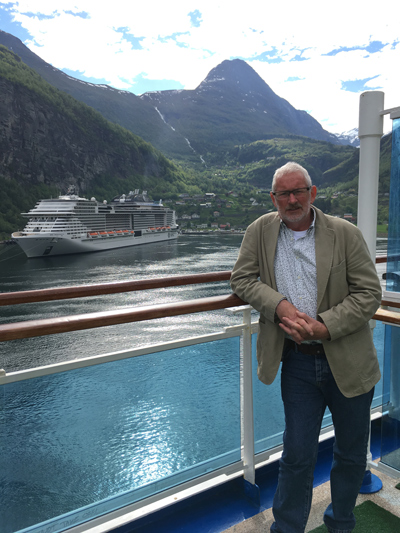
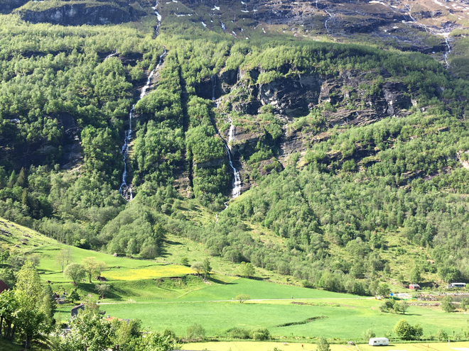
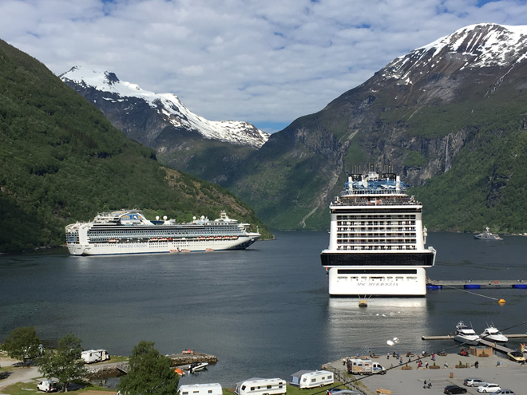
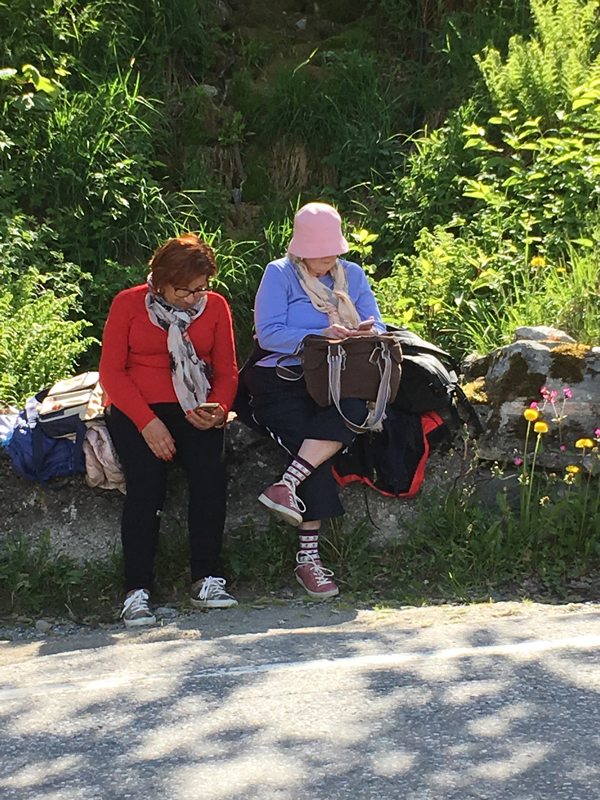
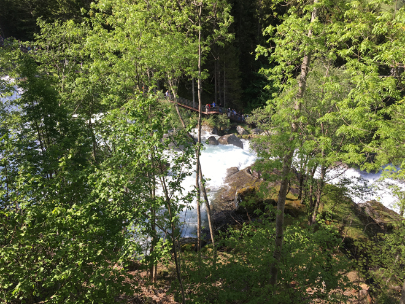
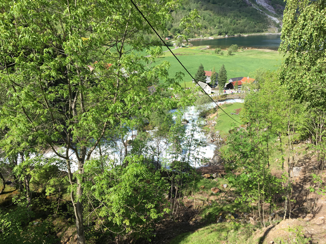
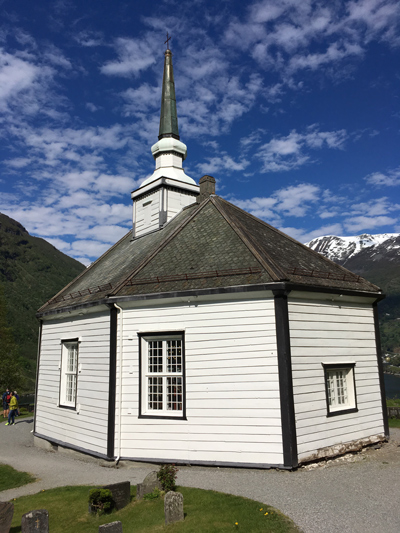
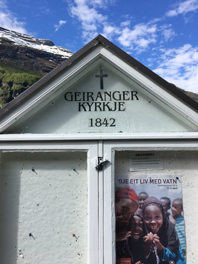
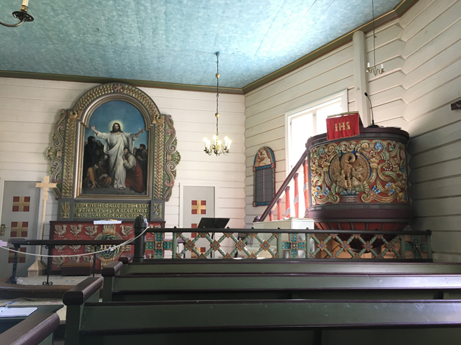
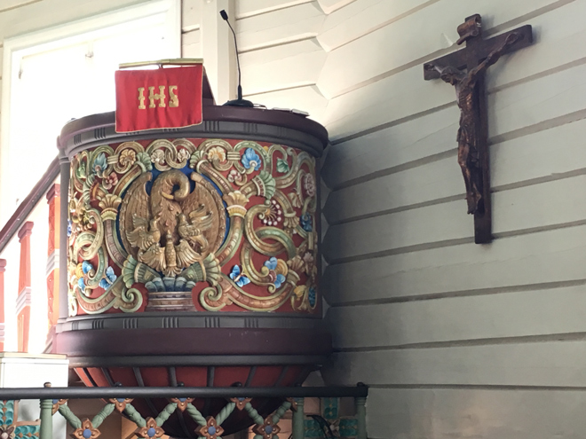
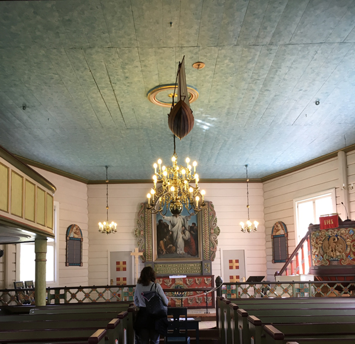
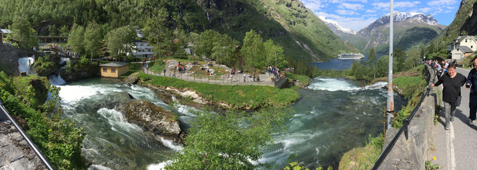
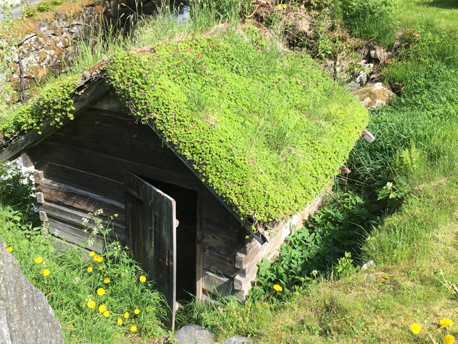
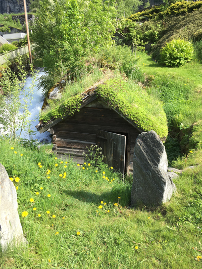
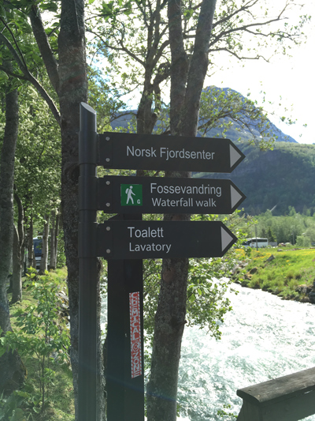
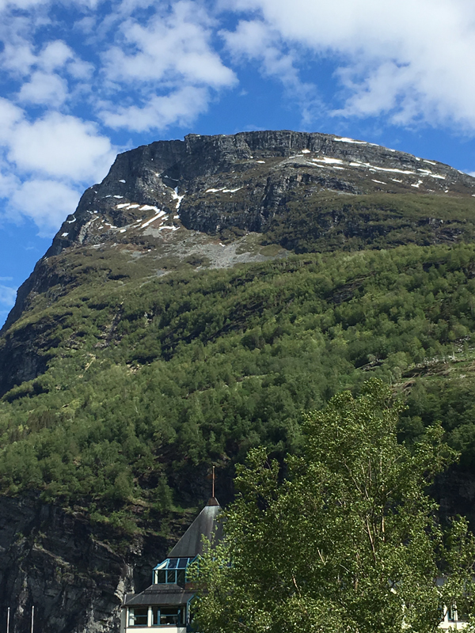